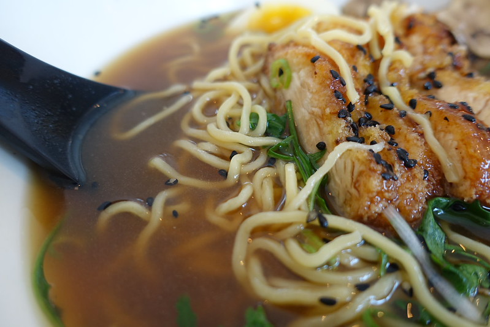

Shoyu Chicken Ramen
Home

Shoyu Chicken Ramen
A rich and savory bowl of ramen featuring tender chicken in a deeply flavored soy-based broth,
topped with soft-boiled eggs and green onions. An authentic Japanese comfort
dish that's surprisingly achievable at home.
Recipe Details
- Prep Time: 15 minutes
- Cook Time: 45 minutes
- Total Time: 1 hour
- Servings: 4
- Difficulty: Medium
Ingredients
- 1.5 lbs chicken breasts or thighs
- 6 cups chicken broth
- 1/4 cup soy souce
- 2 tbsp mirin
- 1 tbsp sesame oil
- 3 gloves garlic, minced
- 1 tbsp grated ginger
- 1 green onion, sliced
- 4 eggs
- 8oz ramen noodles
- Nori (seaweed sheets), cut into strips
Preparation
Broth
- Bring chicken broth to a boil in a large pot
- Add chicken breasts or thighs whole
- Simmer for 20-25 minutes until cooked through
- Remove chicken and set aside to cool, then slice into bite-sized pieces
- In the same broth, add minced garlic, ginger, soy sauce, and sesame oil
- Simmer for 10 minutes to develop flavors
Eggs
- Bring a separate pot of water to a boil
- Gently add eggs and boil for 6-7 minutes for soft-boiled eggs
- Transfer to ice bath, then peel and halve
Noodles
- Cook ramen noodles according to package directions, usually 3-4 minutes
- Drain and set aside
Serving
- Divide cooked noodles among four bowls
- Pour hot broth over noodles
- Top with sliced chicken, soft-boiled egg halves, and green onions
- Garnish with nori strips
- Serve immediately while hot
- Enjoy!